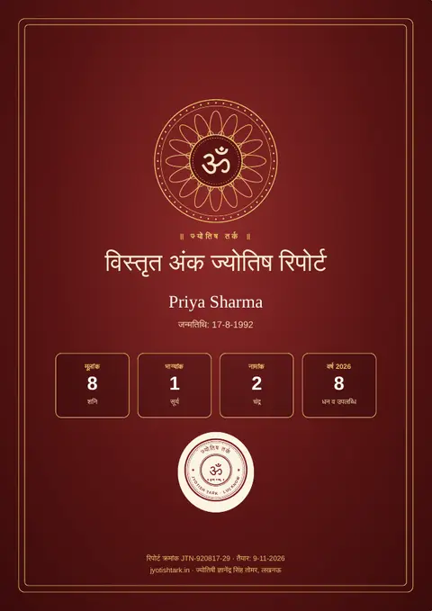
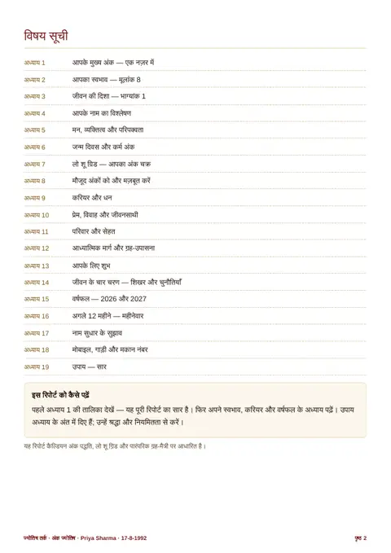
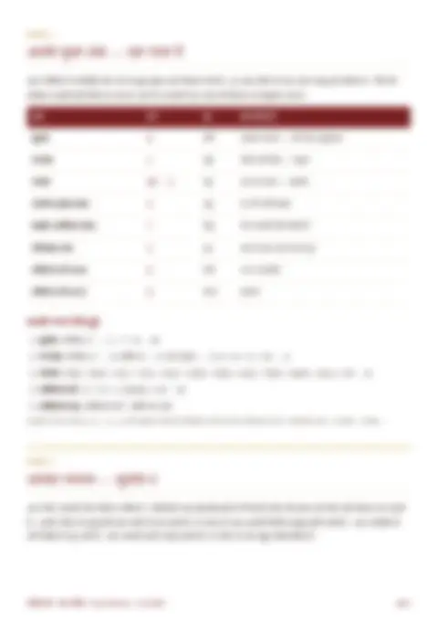
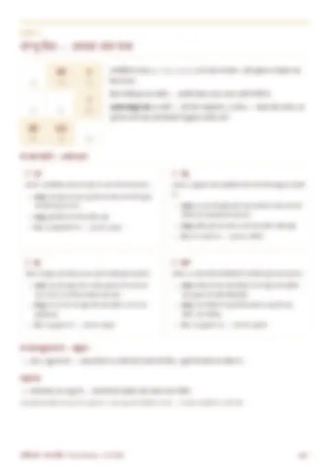
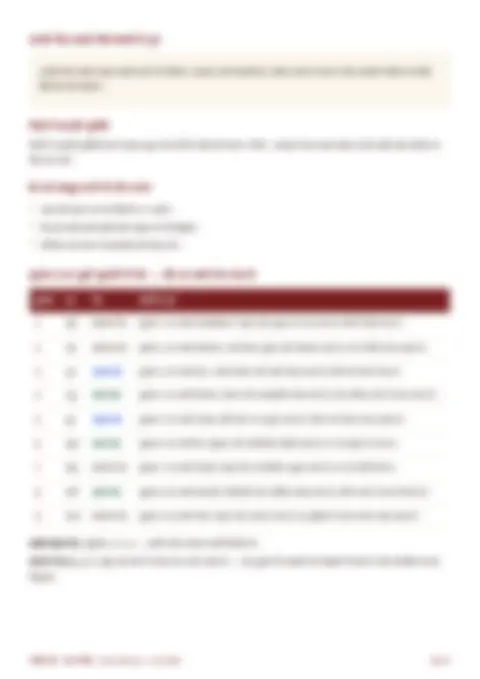
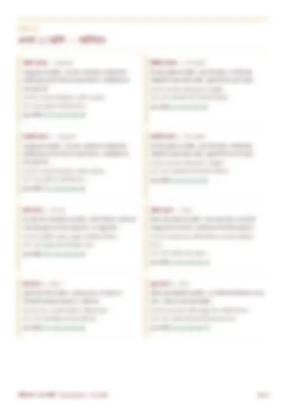
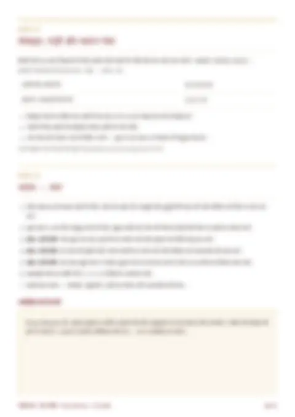

मूलांक 1 (सूर्य)
2027 नई ज़िम्मेदारियों और पहचान का साल हो सकता है। काम में पहल करने के मौके मिलेंगे, पर जल्दबाज़ी और गुस्से से बचें। साझेदारी में बात साफ़ रखें; साल के दूसरे हिस्से में मेहनत का फल दिखने के संकेत।
अपनी जन्मतिथि और नाम से जानें — आपका स्वभाव, जीवन की दिशा, शुभ अंक और आपके मोबाइल नंबर का असर। सरल भाषा में, बिल्कुल मुफ़्त।
अभी देखें ₹299 विस्तृत रिपोर्ट का नमूनाजन्मतिथि और नाम डालें — आपका मूलांक, भाग्यांक, नामांक, शुभ अंक और इस साल का मार्गदर्शन तुरंत देखें।
यह भाषा नीचे के मोबाइल नंबर और मिलान टूल पर भी लागू होती है।
आपके अपने नाम और जन्मतिथि से बनी 17 पेज की PDF, 19 अध्यायों में। नीचे “Priya Sharma” के लिए बना नमूना है — मुख-पृष्ठ और विषय-सूची खुले हैं, अंदर के पेज धुंधले हैं जो आपकी रिपोर्ट में पूरे खुलेंगे।







नंबर डालें और देखें — उसका ग्रह, स्वभाव, और जन्मतिथि डालने पर यह आपसे कितना मेल खाता है।
आपका नंबर सेव नहीं होता — गणना आपके अपने फ़ोन में ही होती है।
अंक ज्योतिष में माना जाता है कि जिस नंबर का हम रोज़ उपयोग करते हैं, उसके अंकों का भी हम पर असर होता है। मोबाइल नंबर के सभी अंकों का योग एक अंक (1 से 9) तक लाकर उसके स्वामी ग्रह से नंबर का स्वभाव देखा जाता है, और फिर उसे आपके मूलांक, भाग्यांक और नामांक से मिलाया जाता है।
| योग | ग्रह | अच्छा माना जाता है |
|---|---|---|
| 1 | सूर्य | अपना व्यवसाय, प्रशासन, लीडरशिप |
| 2 | चंद्र | सेवा, काउंसलिंग, कला, रिश्ते |
| 3 | गुरु | शिक्षा, क़ानून, वित्त, सलाह |
| 4 | राहु | तकनीक, रिसर्च, सोशल मीडिया |
| 5 | बुध | व्यापार, सेल्स, मार्केटिंग, यात्रा — सबसे लोकप्रिय |
| 6 | शुक्र | फ़ैशन, ब्यूटी, होटल, ग्राहक सेवा |
| 7 | केतु | लेखन, शोध, आध्यात्म (व्यापार में धीमा) |
| 8 | शनि | लंबी मेहनत, उद्योग, क़ानून, रियल एस्टेट |
| 9 | मंगल | खेल, सुरक्षा, ज़मीन-जायदाद, प्रतियोगिता |
किसी एक योग को "अशुभ" मानकर डरने की ज़रूरत नहीं — सबसे ज़रूरी है कि नंबर आपके अपने मूलांक और भाग्यांक से मेल खाए।
दोनों की जन्मतिथि डालें और देखें कि आपके अंक कितना मेल खाते हैं।
ऊपर के कैलकुलेटर में जन्मतिथि डालने पर आपकी रिपोर्ट में आपका अपना लो शू ग्रिड बनता है। यह 3×3 का जादुई वर्ग है, जिसकी हर लाइन का योग 15 होता है:
जन्मतिथि के सभी अंक (शून्य छोड़कर) उनके ख़ाने में रखे जाते हैं। भारतीय अंक ज्योतिषी इसमें भाग्यांक भी जोड़ते हैं, और तारीख दो अंकों की हो (10–31) तो मूलांक भी। जो अंक ग्रिड में नहीं है, उससे जुड़ा गुण विकसित करना होता है; जो अंक बार-बार है, उसका गुण प्रबल होता है।
| तल | अंक | क्या दर्शाता है |
|---|---|---|
| मानसिक तल | 4-9-2 | बुद्धि, याददाश्त, योजना |
| भावनात्मक तल | 3-5-7 | भावनात्मक संतुलन, संवेदनशीलता |
| व्यावहारिक तल | 8-1-6 | मेहनत, व्यावहारिक सफलता |
| विचार तल | 4-3-8 | नए विचार और व्यवस्था |
| इच्छाशक्ति तल | 9-5-1 | दृढ़ संकल्प |
| कर्म तल | 2-7-6 | विचारों को काम में बदलना |
| स्वर्ण योग | 4-5-6 | सफलता और समृद्धि |
| संपत्ति योग | 2-5-8 | घर, ज़मीन, संपत्ति |
अपने मूलांक पर टैप करें। आपका मूलांक आपकी जन्म तारीख से तय होता है (जैसे 5, 14 या 23 तारीख = मूलांक 5)।
स्वभाव: आत्मविश्वासी, स्वाभिमानी और आगे बढ़कर ज़िम्मेदारी लेने वाले। अपने फ़ैसले खुद करना पसंद करते हैं; कभी-कभी ज़िद और अहंकार रिश्तों में दूरी ला सकता है।
करियर: प्रशासन, सरकारी सेवा, प्रबंधन, राजनीति, अपना व्यवसाय, चिकित्सा प्रशासन, किसी टीम का नेतृत्व।
प्रेम व विवाह: रिश्ते में सम्मान और वफ़ादारी चाहते हैं। जीवनसाथी को बराबरी का स्थान देना और कभी-कभी झुकना रिश्ते को मज़बूत करता है।
सरल उपाय: रोज़ सुबह सूर्य को जल दें और "ॐ घृणि सूर्याय नमः" का जाप करें; पिता व बड़ों का सम्मान करें।
स्वभाव: संवेदनशील, कल्पनाशील और दूसरों की भावनाएँ समझने वाले। शांति और साथ पसंद करते हैं; मूड जल्दी बदलना और ज़्यादा सोचना कमज़ोरी हो सकती है।
करियर: कला, संगीत, लेखन, नर्सिंग व सेवा क्षेत्र, होटल-फ़ूड, जल से जुड़े काम, सलाहकार, शिक्षण।
प्रेम व विवाह: गहरा भावनात्मक जुड़ाव चाहते हैं। छोटी बातों को दिल पर न लें और अपनी बात खुलकर कहें।
सरल उपाय: सोमवार को शिव जी को जल चढ़ाएँ, "ॐ सोम सोमाय नमः" का जाप करें; माँ का आशीर्वाद लें।
स्वभाव: ज्ञान, अनुशासन और नैतिकता को महत्व देने वाले। अच्छे सलाहकार और शिक्षक; कभी-कभी दूसरों को ज़्यादा सलाह देना या कठोर होना नुकसान करता है।
करियर: शिक्षा, अध्यापन, क़ानून, बैंकिंग-वित्त, धर्म व आध्यात्म, प्रशासन, परामर्श।
प्रेम व विवाह: सम्मान और भरोसे वाला रिश्ता चाहते हैं। जीवनसाथी की बात भी उतनी ही ध्यान से सुनें जितनी अपनी कहते हैं।
सरल उपाय: गुरुवार को पीली वस्तु (चना दाल, हल्दी) का दान करें, "ॐ बृं बृहस्पतये नमः" का जाप करें; गुरुजनों का सम्मान करें।
स्वभाव: मेहनती, व्यावहारिक और लीक से हटकर सोचने वाले। नियम तोड़कर नया रास्ता बनाते हैं; अचानक बदलाव और ग़लतफ़हमियाँ जीवन का हिस्सा रहती हैं।
करियर: तकनीक, कंप्यूटर-आईटी, इंजीनियरिंग, रिसर्च, मीडिया, विदेश से जुड़े काम, निर्माण।
प्रेम व विवाह: रिश्ते में ईमानदारी और स्थिरता चाहते हैं। शक और जल्दी नाराज़ होने से बचें; खुलकर बात करें।
सरल उपाय: शनिवार को गरीबों को भोजन दें, "ॐ रां राहवे नमः" का जाप करें; नशे और ग़लत संगत से दूर रहें।
स्वभाव: चतुर, बातचीत में कुशल, जल्दी सीखने वाले और घूमने के शौक़ीन। बोरियत जल्दी होती है; एक काम पूरा करने से पहले दूसरा शुरू करना कमज़ोरी हो सकती है।
करियर: व्यापार, मार्केटिंग, सेल्स, पत्रकारिता, लेखन, अकाउंट्स, टूर-ट्रैवल, संचार।
प्रेम व विवाह: दोस्ती जैसा, हँसी-मज़ाक वाला रिश्ता पसंद है। जीवनसाथी को समय देना और भरोसा दिलाना ज़रूरी है।
सरल उपाय: बुधवार को गाय को हरा चारा दें, "ॐ बुं बुधाय नमः" का जाप करें; बहन-बुआ का सम्मान करें।
स्वभाव: आकर्षक, कलाप्रेमी, परिवार और सुख-सुविधा को महत्व देने वाले। रिश्तों में समझौता करना जानते हैं; दिखावे और ज़रूरत से ज़्यादा ख़र्च से बचें।
करियर: फ़ैशन, डिज़ाइन, फ़िल्म-कला, होटल-हॉस्पिटैलिटी, ब्यूटी, ज्वेलरी, इंटीरियर, वाहन व्यवसाय।
प्रेम व विवाह: प्रेम और रोमांस वाला रिश्ता चाहते हैं; परिवार के लिए समर्पित रहते हैं।
सरल उपाय: शुक्रवार को सफ़ेद मिठाई या दही का दान करें, "ॐ शुं शुक्राय नमः" का जाप करें; स्त्रियों का सम्मान करें।
स्वभाव: शांत, विचारशील, शोध करने वाले और अकेले समय बिताना पसंद करने वाले। अंतर्ज्ञान अच्छा होता है; अपनी बात न कह पाना और अकेलापन महसूस होना कमज़ोरी हो सकती है।
करियर: रिसर्च, विज्ञान, दर्शन, ज्योतिष-आध्यात्म, लेखन, विदेश सेवा, डेटा-विश्लेषण।
प्रेम व विवाह: समझदार, धैर्यवान जीवनसाथी चाहिए। मन की बात साझा करें, चुप्पी को ग़लत न समझा जाए।
सरल उपाय: गणेश जी की पूजा करें, कुत्ते को रोटी दें, "ॐ कें केतवे नमः" का जाप करें।
स्वभाव: गंभीर, ज़िम्मेदार और लंबी मेहनत से सफलता पाने वाले। देर से मिलने वाली सफलता टिकाऊ होती है; निराशा और काम का बोझ कमज़ोरी हो सकती है।
करियर: क़ानून-न्याय, प्रशासन, उद्योग-फ़ैक्ट्री, खनन, निर्माण, रियल एस्टेट, समाज सेवा।
प्रेम व विवाह: रिश्ते में स्थिरता और भरोसा चाहते हैं; भावनाएँ ज़ाहिर करने में समय लेते हैं।
सरल उपाय: शनिवार को सरसों का तेल या काले तिल का दान करें, "ॐ शं शनैश्चराय नमः" का जाप करें; मेहनत करने वालों की मदद करें।
स्वभाव: साहसी, ऊर्जावान, मदद के लिए तैयार और प्रतियोगिता पसंद करने वाले। गुस्सा और जल्दबाज़ी सबसे बड़ी कमज़ोरी हो सकती है।
करियर: सेना, पुलिस, खेल, इंजीनियरिंग, सर्जरी व चिकित्सा, ज़मीन-जायदाद, सुरक्षा।
प्रेम व विवाह: जुनूनी और रक्षा करने वाले साथी। बहस को झगड़े में न बदलने दें।
सरल उपाय: मंगलवार को हनुमान चालीसा पढ़ें, "ॐ अं अंगारकाय नमः" का जाप करें; भाइयों से संबंध अच्छे रखें।
2027 का वर्ष-अंक है 2 + 0 + 2 + 7 = 11 → 2 (चंद्र) — यह सहयोग, रिश्तों और धैर्य का साल माना जाता है। नीचे हर मूलांक के लिए सामान्य संकेत हैं। आपके लिए 2027 का सटीक व्यक्तिगत वर्ष ऊपर के कैलकुलेटर में दिखता है।
2027 नई ज़िम्मेदारियों और पहचान का साल हो सकता है। काम में पहल करने के मौके मिलेंगे, पर जल्दबाज़ी और गुस्से से बचें। साझेदारी में बात साफ़ रखें; साल के दूसरे हिस्से में मेहनत का फल दिखने के संकेत।
2027 का अंक (2+0+2+7 = 11 → 2) आपके मूलांक से मेल खाता है — रिश्तों, साझेदारी और परिवार के लिए अनुकूल संकेत। भावनाओं में बहकर बड़े फ़ैसले न लें; धैर्य से काम लेने पर सहयोग मिलेगा।
2027 पढ़ाई, नई जानकारी और मार्गदर्शन के लिए अच्छा माना जा सकता है। ख़र्च पर नज़र रखें और वादे सोच-समझकर करें; परिवार में किसी शुभ कार्य के योग बन सकते हैं।
2027 में काम के तरीक़े में बदलाव या नई तकनीक सीखने के मौके दिख सकते हैं। काग़ज़ी काम और अनुबंध ध्यान से पढ़ें; धैर्य रखें तो साल के अंत तक स्थिरता के संकेत।
2027 नेटवर्क बढ़ाने, यात्रा और नए काम की बातचीत के लिए अनुकूल हो सकता है। जल्दबाज़ी में निवेश न करें और लिखित में बात पक्की करें।
2027 परिवार, घर-सजावट और रिश्तों में मिठास के संकेत देता है। विवाह योग्य लोगों के लिए बातचीत आगे बढ़ सकती है; ख़र्च का बजट बनाकर चलें।
2027 आत्म-चिंतन, पढ़ाई और किसी हुनर को गहराई से सीखने के लिए अच्छा माना जा सकता है। बड़े फ़ैसलों में किसी भरोसेमंद व्यक्ति की सलाह लें।
2027 में धीरे-धीरे पुरानी मेहनत का फल मिलने के संकेत। काम का बोझ रहेगा, इसलिए सेहत और नींद पर ध्यान दें; जल्दबाज़ी वाले फ़ैसलों से बचें।
2027 नए लक्ष्य और खेल-स्वास्थ्य के लिए ऊर्जा देने वाला हो सकता है। विवाद और वाहन चलाते समय जल्दबाज़ी से बचें; टीम के साथ काम करने पर बेहतर परिणाम।
ये अंक ज्योतिष के सामान्य संकेत हैं, गारंटी नहीं। विस्तृत वर्षफल के लिए अपनी कुंडली देखें या ज्योतिषी से बात करें (पहली 5 मिनट की कॉल मुफ़्त)।
चैल्डियन पद्धति में अंक 9 किसी अक्षर को नहीं दिया जाता। नाम के सभी अक्षरों के अंक जोड़कर एक अंक तक लाएँ — वही नामांक है।
| अंक | अक्षर |
|---|---|
| 1 | A, I, J, Q, Y |
| 2 | B, K, R |
| 3 | C, G, L, S |
| 4 | D, M, T |
| 5 | E, H, N, X |
| 6 | U, V, W |
| 7 | O, Z |
| 8 | F, P |
नाम की स्पेलिंग बदलने से पहले अपने मूलांक और भाग्यांक दोनों देखें — केवल एक अंक के लिए नाम बदलना ज़रूरी नहीं। व्यक्तिगत नाम-सुधार के लिए परामर्श लें।
ऊपर के कैलकुलेटर यह सब अपने-आप करते हैं, और आपकी रिपोर्ट के आख़िर में आपकी अपनी गणना भी दिखती है। हाथ से निकालना हो तो उदाहरण के लिए जन्मतिथि 14-03-1995 और नाम RAHUL लेते हैं:
केवल जन्म की तारीख जोड़ें: 1 + 4 = 5 → मूलांक 5। (तारीख 1 से 9 हो तो वही मूलांक है; 29 हो तो 2 + 9 = 11 → 1 + 1 = 2)
पूरी जन्मतिथि के सभी अंक जोड़ें: 1 + 4 + 0 + 3 + 1 + 9 + 9 + 5 = 32 → 3 + 2 = 5 → भाग्यांक 5।
नाम के हर अंग्रेज़ी अक्षर का अंक नीचे के चार्ट से लें: R(2) + A(1) + H(5) + U(6) + L(3) = 17 → 1 + 7 = 8 → नामांक 8।
जन्म की तारीख + महीना + चालू वर्ष का अंक: 2027 के लिए 14 + 3 + (2+0+2+7 = 11 → 2) = 19 → 1 + 9 = 10 → 1। यानी 2027 इस व्यक्ति के लिए नई शुरुआत का साल।
सभी 10 अंक जोड़ें: 9 + 8 + 7 + 6 + 5 + 4 + 3 + 2 + 1 + 0 = 45 → 4 + 5 = 9 (मंगल)। 45 संयुक्त अंक है, जिसे कीरो पद्धति में 27 ("राजदंड") के समान शुभ माना गया है।
भाग्यांक निकालते समय अगर योग 11, 22 या 33 आए तो पश्चिमी अंक शास्त्र में इसे घटाया नहीं जाता — इन्हें "मास्टर अंक" कहते हैं, जो बड़ी क्षमता और बड़ी ज़िम्मेदारी दोनों दिखाते हैं। भारतीय पद्धति में इनका मूल अंक (2, 4, 6) भी साथ देखा जाता है।
मूलांक आपका स्वभाव बताता है, भाग्यांक जीवन की दिशा, और नामांक बताता है कि नाम की स्पेलिंग आपके मूलांक-भाग्यांक के साथ कितना मेल खाती है।
मूलांक केवल जन्म की तारीख से निकलता है और आपका स्वभाव बताता है। भाग्यांक पूरी जन्मतिथि से निकलता है और जीवन की दिशा बताता है।
चैल्डियन पद्धति में अंग्रेज़ी के हर अक्षर को 1 से 8 तक एक अंक दिया गया है। नाम के सभी अक्षरों के अंक जोड़कर एक अंक तक लाने पर नामांक मिलता है।
भाग्यांक निकालते समय योग 11, 22 या 33 आए तो उसे घटाया नहीं जाता। इन्हें मास्टर अंक कहते हैं — ये बड़ी क्षमता और बड़ी ज़िम्मेदारी दिखाते हैं।
केवल जन्म की तारीख के अंक जोड़कर एक अंक तक लाएँ। जैसे 14 तारीख = 1 + 4 = 5, यानी मूलांक 5। 29 तारीख = 2 + 9 = 11 → 1 + 1 = 2।
पूरी जन्मतिथि (दिन, महीना, साल) के सभी अंक जोड़कर एक अंक तक लाएँ। जैसे 14-03-1995 = 1+4+0+3+1+9+9+5 = 32 → 5, यानी भाग्यांक 5।
मोबाइल नंबर के सभी 10 अंकों को जोड़ें और योग को एक अंक तक लाएँ। जैसे 98765 43210 का योग 45 → 4 + 5 = 9। इस पेज के मोबाइल नंबर कैलकुलेटर से यह अपने-आप निकलता है।
2027 का वर्ष-अंक 2 + 0 + 2 + 7 = 11 → 2 है, जिसका स्वामी चंद्र है। इसे सहयोग, रिश्तों और धैर्य का साल माना जाता है।
सबसे अच्छा योग वही है जो आपके मूलांक और भाग्यांक दोनों के अनुकूल हो। सामान्य रूप से व्यापार के लिए 5 और 6, नौकरी व प्रशासन के लिए 1 और 3 अच्छे माने जाते हैं। इस पेज का मोबाइल नंबर कैलकुलेटर आपकी जन्मतिथि से आपके लिए अनुकूल योग बताता है।
लो शू ग्रिड 3×3 का वर्ग (4-9-2, 3-5-7, 8-1-6) है जिसमें जन्मतिथि के अंक रखकर देखा जाता है कि कौन-से अंक मौजूद हैं, कौन-से नहीं और कौन-से तल (जैसे 4-5-6 स्वर्ण योग) पूरे हैं। इस पेज का कैलकुलेटर आपका ग्रिड अपने-आप बनाता है।
गाड़ी नंबर के अक्षर छोड़कर सभी अंक जोड़ें और योग को एक अंक तक लाएँ — जैसे UP32 AB 1234 = 3+2+1+2+3+4 = 15 → 6 (शुक्र)। कुछ अंक ज्योतिषी केवल आख़िरी 4 अंक जोड़ते हैं; इस पेज का कैलकुलेटर दोनों दिखाता है।